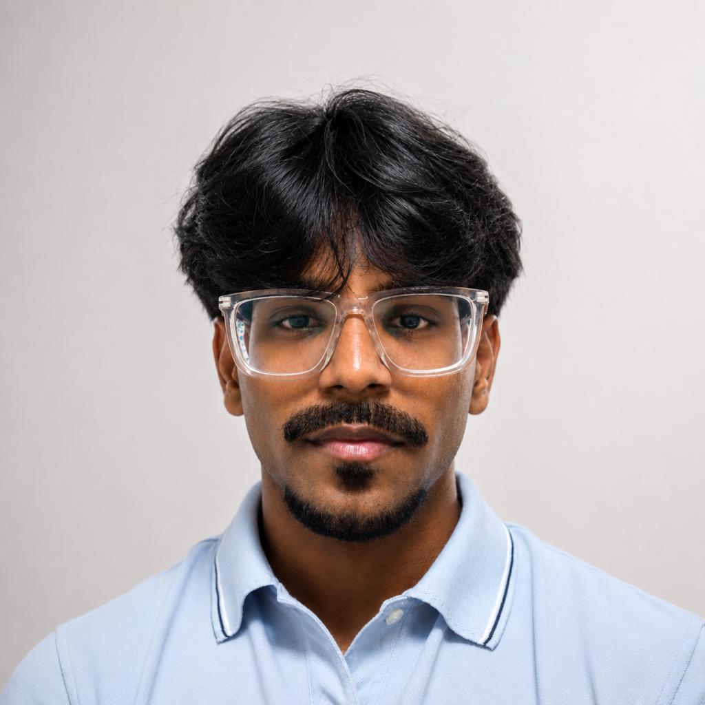
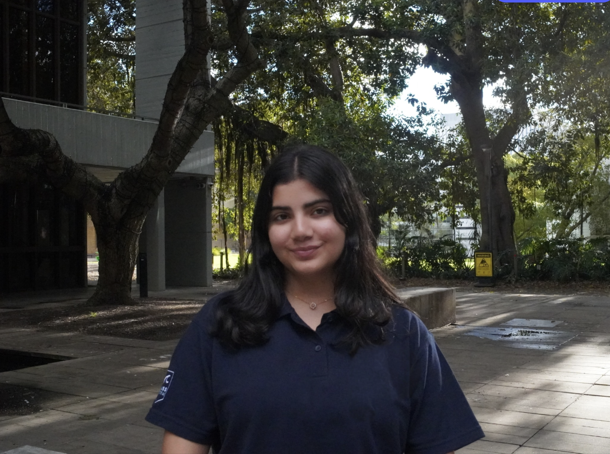

04People
Team
Engineers who'd rather build than pitch.
-
01
Nandit Shah
Co-founder & CEO

Hey, I’m Nandit, Co-Founder and CEO of Crucible Ventures. I’m currently studying Mechatronics Engineering and Finance at the University of New South Wales, combining my passion for engineering and entrepreneurship.
Meet the founder
Through my university studies and professional experience, I’ve had the opportunity to contribute to cutting-edge projects across Sydney’s deep tech ecosystem, ranging from nuclear fusion technology at Atomcraft and robotic automation at The Robotfactory Factory to computer vision systems at Platypus Vision.
Working across robotics, product design and development has given me firsthand insight into what it takes to transform complex ideas into real-world solutions.
I have experience working with corporate clients, producing go-to-market strategies, valuation analysis and growth strategies.
Through Crucible Ventures, I’m bringing together my technical experience and entrepreneurial ambition to build a platform that helps innovative ideas become unicorns.
Why build?
I’m not going to lie, the whole reason I got into startups was so I could build my own Iron Man suit.
Sounds ridiculous, I know. But ever since I was a kid, I’ve been fascinated by the idea of turning the craziest ideas into reality and pushing the boundaries of what’s possible. That’s what makes startups so exciting.
You’re constantly challenging the norm, experimenting with new ideas and trying to build things that people tell you cannot be built. My journey with startups has been anything but straightforward.
There are failures, setbacks and plenty of critics telling you why your idea won’t work. There are moments when you have absolutely no idea what you’re doing, everything seems to fall apart, and you start doubting everything you have spent months building.
But somewhere in that chaos, you learn. You adapt. You become a little better every day. You find people who are just as ambitious, people who are just as curious and equally crazy. People who are willing to take on the uncertainty to build something out of nothing and realise that the journey itself is just as rewarding as whatever you’re trying to build.
That’s what draws me to building. The adventure that follows.
This embodies the spirit I want to bring to Crucible Ventures. A place for people who aren’t afraid to dream a little too big, challenge what’s possible and, most importantly, get their hands dirty building something real.
As for the Iron Man suit? Still working on that.
-
02
Vedant Tyagi
Co-founder & CTO

Aerospace engineering and computer science at UNSW. Runs Crucible's technical direction, from feasibility to prototypes, and leads the engineering teams.
-
03
Aaryan Parmar
Venture & Legal

Supports venture development, and the legal and commercial side of Crucible's projects and partnerships.
-
04
Smit Parikh
Outreach & Partnerships

Hi, I’m Smit, a biomedical engineering student at the University of Sydney.
I grew up watching Shark Tank and always wanted to aura farm on the stage, which is what got me interested in startups.
On a serious note, however, I have always taken an interest in prosthetics and working with EMG signals.
I am very excited and privileged to be leading the exoskeleton project at Crucible Ventures, and hopefully I can make Nandit the Iron Man he wants to be.
-
05
Saurabh Parekh
Commercial Strategy & Operations Associate

I am a Commercial Strategy & Operations Associate at Crucible Ventures.
I’m a Master of Commerce (Business Analytics & Digital Transformation) graduate from UNSW. I have consulting experience leading student projects through UNSW’s Global Consulting Group, and I am looking forward to working across commercial strategy and business model development for Crucible’s portfolio.
A cool story about me
I have a simple rule: if a new experience comes my way, I will ALWAYS say yes. That rule got me on my first hike, onto my first overseas trip, and into rooms full of people I’d never have met otherwise. Whatever’s next, I am surely in.
Why I love startups
My first job was as one of the earliest hires at a startup, where every day meant figuring things out with no playbook. That is where I found what I love: spotting the issues that slow a team down and building new processes that work.
I am also constantly experimenting with new AI tools, and I am curious how small teams can use them to move faster. Startups bring all of that together, which is why I am here.
-
06
Chahek Dawani
Venture Growth & Commercialisation

Hi! I'm Chahek and I'm currently studying Commerce and Information Systems at UNSW. I'm interested in all things business, data and technology. I love exploring new ideas, figuring out what makes businesses thrive and turning those ideas into something meaningful.
I'm particularly drawn to the commercial side of startups, learning what makes an idea viable, how you get it off the ground and what it takes to turn it into something bigger. I'm naturally curious, enjoy connecting the dots and looking at problems from a different angle (because sometimes the obvious answer isn't the best one!).
Startup story
My interest in startups really took off when I started working on FoodCompass with Enactus UNSW, a project tackling food waste and making surplus food more accessible to students. Seeing an idea move from a conversation to something with real potential for impact was what got me hooked.
It made me curious about everything that happens behind the scenes: testing ideas, making tough decisions and finding ways to grow. What I love most about startups is that no two days are quite the same. There's always something new to learn, a problem to solve or an idea to explore!